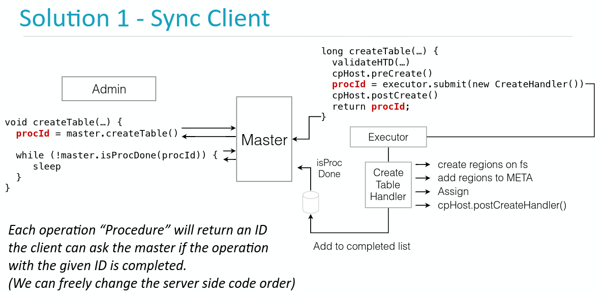
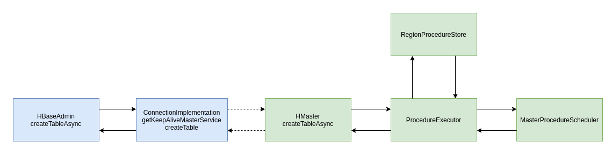
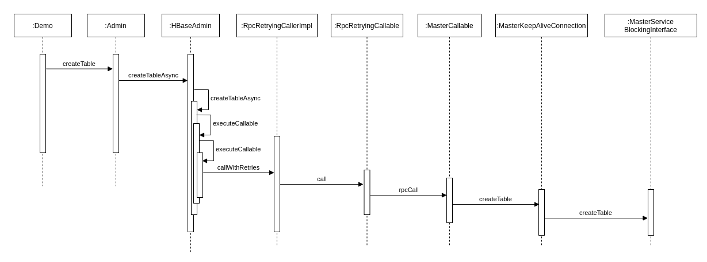
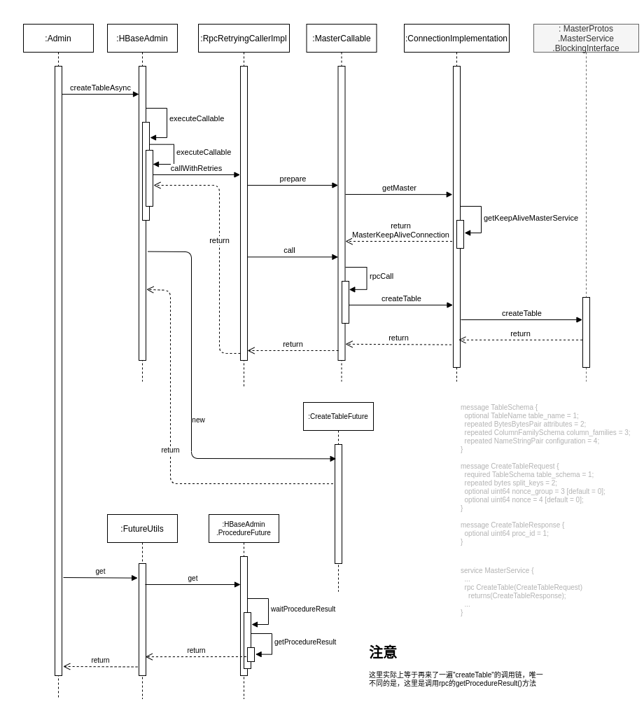
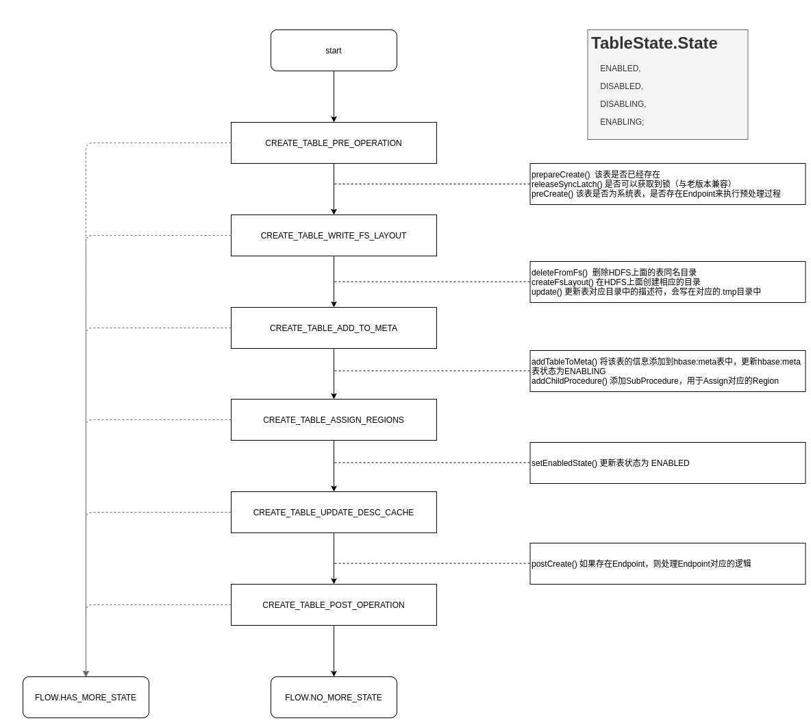

CreateTable涉及到的模块说明
创建表的整个流程主要分为两大块，一大块是Client端，主要用于构造RPC请求，另一大块是Master端，主要负责实际的建表流程。

整个流程借助上图还是比较容易理解的。因为Procedure v2框架的引入，客户端根据需要仅仅发送请求便可，然后实际的建表就交给Procedure v2进行实际的操作。
创建表的RPC消息结构
1
2
3
4
5
6
7
8
9
10
11
12
13
14
15
16
17
18
19
20
21
22
23
24
25
|
message TableSchema {
optional TableName table_name = 1;
repeated BytesBytesPair attributes = 2;
repeated ColumnFamilySchema column_families = 3;
repeated NameStringPair configuration = 4;
}
message CreateTableRequest {
required TableSchema table_schema = 1;
repeated bytes split_keys = 2;
optional uint64 nonce_group = 3 [default = 0];
optional uint64 nonce = 4 [default = 0];
}
message CreateTableResponse {
optional uint64 proc_id = 1;
}
service MasterService {
/** Creates a new table asynchronously */
rpc CreateTable(CreateTableRequest) returns(CreateTableResponse);
/** Deletes a table */
rpc DeleteTable(DeleteTableRequest) returns(DeleteTableResponse);
}
|
创建表的流程介绍
1
2
3
4
5
6
7
8
|
public boolean create(TableDescriptor table) {
try (Admin admin = connection.getAdmin()) {
admin.createTable(table);
} catch (IOException e) {
return false;
}
return true;
}
|
整个建表的代码段大概如上所示，看起来比较简单，但是实际整个流程异常的繁琐。

HBase Client的流程
当调用admin.createTable(table)语句创建表时，会通过层层调用，最后由MasterService调用
BlockingInterface发送rpc请求，请求的报文体则如前面Protobuf给出的结构。
HMaster接收到该请求后会执行后续逻辑，同时会返回一个proc Id，该id最终会被封装成HBaseAdmin.CreateTableFuture类，定时查询proc Id对应的Procedure执行结果，直到最后建表成功。

简易版的如上图所示，完整版的如下图所示：

HBase Master的流程
HBase Master的流程较为繁琐，主要负责执行Procedure。具体Procedure的工作原理，本节不再赘述，可以参考《HBase Procedure v2 原理说明》一节。这里直接开始讲述Procedure如何执行。
Procedure从MasterProcedureScheduler维护的tableRunQueue队列中取出CreateTableProcedure开始调用执行其中的executeFromState()方法。这部分代码即整个建表的核心逻辑。
1
2
3
4
5
6
7
8
9
10
11
12
13
14
15
16
17
18
19
20
21
22
23
24
25
26
27
28
29
30
31
32
33
34
35
36
37
38
39
40
41
42
43
|
@Override
protected Flow executeFromState(final MasterProcedureEnv env, final CreateTableState state) throws InterruptedException {
LOG.info("{} execute state={}", this, state);
try {
switch (state) {
case CREATE_TABLE_PRE_OPERATION:
...
preCreate(env);
setNextState(CreateTableState.CREATE_TABLE_WRITE_FS_LAYOUT);
break;
case CREATE_TABLE_WRITE_FS_LAYOUT:
...
env.getMasterServices().getTableDescriptors().update(tableDescriptor, true);
setNextState(CreateTableState.CREATE_TABLE_ADD_TO_META);
break;
case CREATE_TABLE_ADD_TO_META:
newRegions = addTableToMeta(env, tableDescriptor, newRegions);
setNextState(CreateTableState.CREATE_TABLE_ASSIGN_REGIONS);
break;
case CREATE_TABLE_ASSIGN_REGIONS:
setEnablingState(env, getTableName());
addChildProcedure(env.getAssignmentManager().createRoundRobinAssignProcedures(newRegions));
setNextState(CreateTableState.CREATE_TABLE_UPDATE_DESC_CACHE);
break;
case CREATE_TABLE_UPDATE_DESC_CACHE:
setEnabledState(env, getTableName());
setNextState(CreateTableState.CREATE_TABLE_POST_OPERATION);
break;
case CREATE_TABLE_POST_OPERATION:
postCreate(env);
return Flow.NO_MORE_STATE;
default:
throw new UnsupportedOperationException("unhandled state=" + state);
}
} catch (IOException e) {
if (isRollbackSupported(state)) {
setFailure("master-create-table", e);
} else {
LOG.warn("Retriable error trying to create table=" + getTableName() + " state=" + state, e);
}
}
return Flow.HAS_MORE_STATE;
}
|
上述代码转换成流程图如下所示，可以看到因为Procedure v2的存在，整个建表流程被拆的非常琐碎，如果途中出现了异常，那么会在Failure中将本次Procedure的状态设置为FAILED，后续尝试回滚截至该步骤的所有操作所产生的行为。

HBase RegionServer的流程
HBase Master建表流程走到CREATE_TABLE_ASSIGN_REGIONS这一步的时候，会创建出一个SubProcedure，该SubProcedure会调用CREATE_TABLE_ASSIGN_REGIONS将Region分配到各个RegionServer上面。
Reference
HBASE-12439